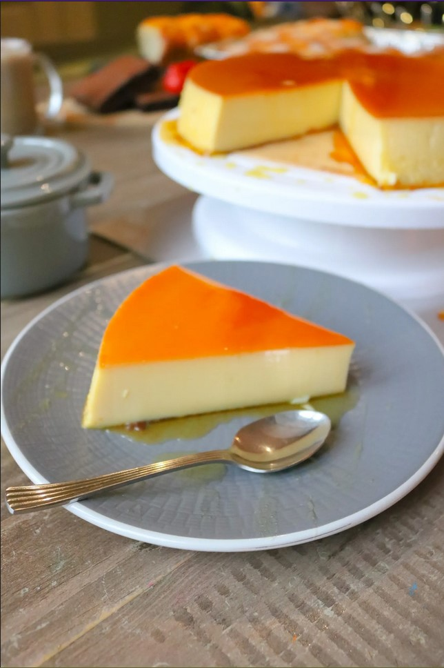

Quesillo

.
.
Description
Quesillo is a Venezualan Flan. It uses both the egg yolk and the egg white so it will have a prominent texture compared to the smooth and silky texture of the normal Leche Flan.
.
.
Ingredients
- 1 cup white sugar
- 1 can (14 ounce) sweetened condensed milk
- 1 ¾ cups milk
- 3 eggs
- ~optional~1 teaspoon vanilla extract
.
.
Steps
- Preheat the oven to 350°F or 175°C.
- Prepare a water bath, by filling a 9-inch heat-proof container with water.
- Melt sugar in a nonstick pan over medium-low heat, stirring constantly until melted, 7 to 10 minutes; be careful to keep it from burning. Pour sugar into a flan mold, coating the sides to ensure that the egg/milk mixture in the next step will not touch the container.
- Pour sweetened condensed milk into a bowl. Fill the empty can with milk and add to the bowl; stir in eggs and vanilla extract. Blend well. Fold mixture with a spatula or tap against the counter to remove air bubbles.
- Pour milk mixture into the slightly cooled flan mold. Put the lid on and place inside the water bath; don't let the water go over the rim.
- Bake the quesillo in the bain-marie in the preheated oven for 45 minutes. Pry lid open with a knife carefully; continue baking until set, about 15 minutes more.
- Let quesillo cool to room temperature, at least 25 minutes; refrigerate 8 hours to overnight. Slide a knife around the edges of the mold to loosen and invert onto a plate.